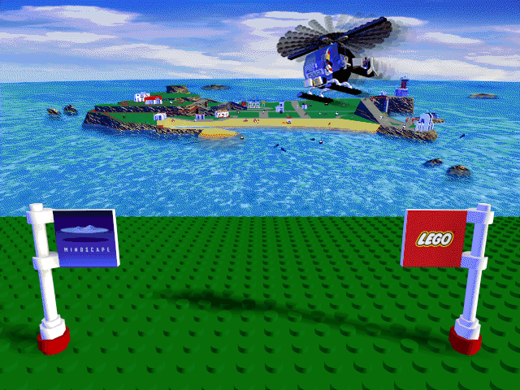
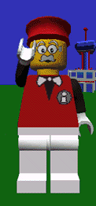

Need help? If something does not work, a step is unclear, or your device is not listed, ask the isle-portable team and community.
Report a problem or ask a question (GitHub Issues)
Chat with the community on Matrix
Tip: press F1 at any time to open this window.